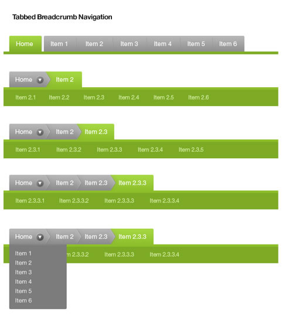

Tab式位置导航变体
Geoff Teehan 的一篇 The Tabbed Breadcrumb Navigation 介绍了一种新颖的、综合了 Tab 导航的 Breadcrumb（一直找不到合适的中译，位置导航？您的位置？还是面包屑？），如下图：

http://hiphotos.baidu.com/hxzon/pic/item/78b3edc401e9c3ee8326acfb.jpg
图中不错的表达了网站的层次、结构，单独来看很有新意。Yahoo! 在运用这招的时候加入了一些变化，参见 Yahoo! Food、Yahoo! Sports、Yahoo! TV。不过 Yahoo! Food 的那条 Buzz 确实造成了不小的干扰。当然 Yahoo! 必须考虑更多的因素，比如 Tab 的数量。图：
http://hiphotos.baidu.com/hxzon/pic/item/7cef45a93a8a4fbb1f17a2fb.jpg
这很容易让我们联想起 Amazon 在导航上面做出的努力和改进，以及目前 Amazon 的动态 Tab 式导航。
除了惊叹于它的创意，我们仔细想想，在交互设计中，我们可以整合两种用户比较习惯的元素，这里是 Tab 导航和 Breadcrumb，这是一种将现存元素组合的创意思考方法。值得学习。
酷归酷，在这种触及核心的导航上，我仍然不改我的观点，最好的体现网站信息架构的交互方式，目前仍然是树型控件，或者称之为目录式导航（至少在国内如此）。
http://hi.baidu.com/1212u/blog/item/dcb80e90235be28ca877a470.html 重构与体验